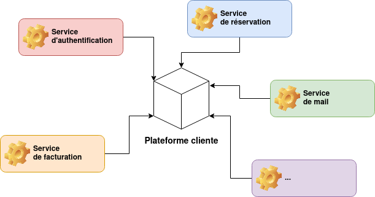
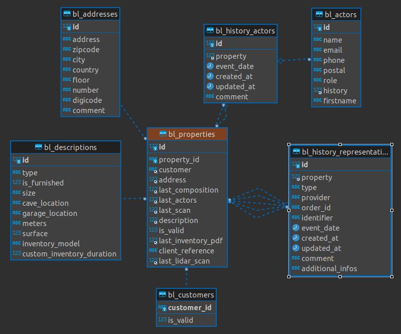
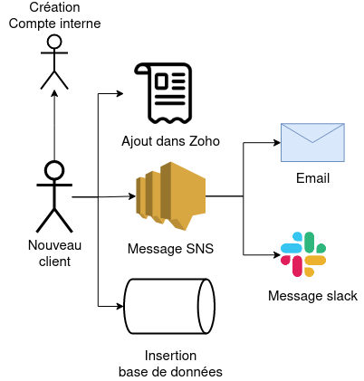
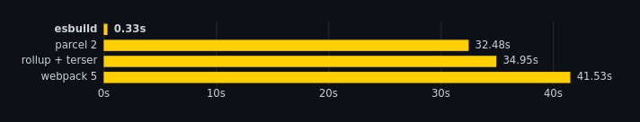
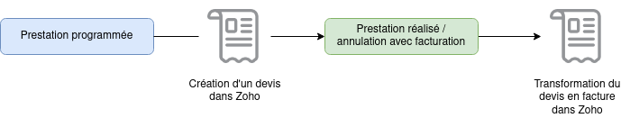
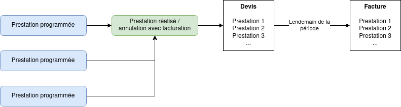
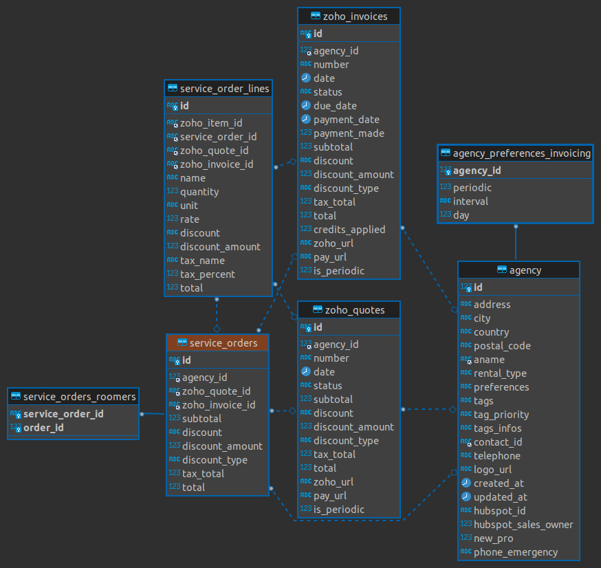

Soutenance de mémoire
Jérémy LLANTA
Développeur backend
- Startup bretonne
- Externalisation d'état des lieux
- 40 collaborateurs et 200 checkers
Méthodologie SWARM
- SOP
- CORE
SOP
Scale Our Product
- 1 product owner
- 1 lead développeur
- 2 développeurs seniors
- 4 développeurs juniors
CORE
- 1 product owner
- 1 lead développeur
- 2 développeurs seniors
- 2 développeurs juniors
OKR
Objectives and Key Results
Cycle de 6 semaines
3 sprints de 2 semaines
Microservices
La plateforme cliente


- Plus ou moins fonctionnelle
- Mauvaise ergonomie
- Difficile à maintenir
Refonte de la plateforme
La base logement
Retravailler la partie réservation d'état des lieux
→ Liste de logements
La base logement
La base logement
→ Développement de l'API
→ Prise en main du framework Serverless
$ serverless offline start --stage dev
$ serverless deploy --stage dev
La base logement
→ Lancement du frontend

L'authentification
- Ajout dans Zoho Books
- Insertion dans la base de données
L'authentification
- OWASP
- Création d’un compte interne
- Ajout dans Zoho Books
- Insertion dans la base de données
- Envoie d'un email + slack
L'authentification
L'authentification
Développement de l'API
L'authentification
Ajout de tests
L'authentification
Test de succès
L'authentification
Test d'erreur
L'authentification
Esbuild
La facturation périodique
La facturation périodique
La facturation périodique
La facturation périodique
Refactorer l'API
- CRON
- Webhook
La facturation périodique
Webhook : Problème d'ordonnance
→ Passer par une queue

La facturation périodique
Webhook : Problème d'ordonnance
→ file d'attente FIFO
First-In-First-OutLa mise en production
Phase de tests
Migration progressive
Avec du recul
Retours positifs et quantifiables
Risques identifiés en amont
Remettre au propre
Bonne gestion du projet
Avec du recul
Conforté sur mes préférences
- TDD
- Design system
- Logs
- Standardiser